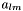

Classes:
- Healpix_Base contains all functionality related to the HEALPix pixelisation which does not require actual map data.
- Healpix_Base2 is analogous to Healpix_Base, but allows for much higher resolutions.
- Healpix_Map is derived from Healpix_Base and implements additional functionality like change of the ordering scheme, up- and degrading and interpolation.
- Alm is used to store spherical harmonic coefficients.
- PowSpec is used to store  coefficients.
Conversions between different data types:
FITS I/O: